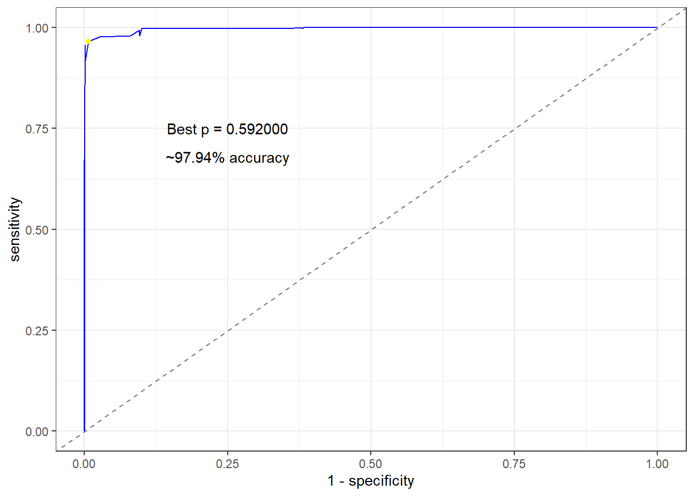

For this project, I am interested in creating a type racing game that uses sequence alignment to estimate performance.
I’m using R to determine what are the best parameters of \(\alpha\) and \(\delta\) to determine a match of words in the type racing context. To do this I will generate my own data by getting myself to type out fast words (which will be considered matches) and then generate a bunch of mismatched words which will be considered the mismatches.
From this data, I can best estimate the best parameters of \(\delta\) and \(\alpha\) that provide the most accurate discrimination between a matched word and a mismatched word.
Part One: Data Collection
First of all, we need a large set of words. Since I am in need of getting a bunch of sentences anyway, I will fork a dataset of sentences and then deconstruct it in this file to generate my dataset.
The data I have chosen is from Github user janelleshane so all credit to her for crowd sourcing this dataset.
text =scan('sentencedata.txt', what ='char', sep ='\n')# Clean the data of quotes.text2 =gsub(x = text, '\"', '')text2[2]
[1] "I have been a shot to do and a dead woman in the world when you can remember to want to go of my life."
# Write out data again.# writeLines(text2, 'sentencedata2.txt')# Split the text data into words.text.words =unlist(strsplit(text2, ' '))text.words[1:10]
I want to leave the punctuation in there since it is a valid part of each sentence; likewise with uppercase characters and punctuation. However I want to remove the instances of missing characters.
Now I want to create a test set of words that I will aim to type out. I’ll make this size about 1,000 and I will consider the words I try to match “matches”. I will then create an equal size list of “mismatches” that will be of words which don’t match.
From this, I will use the python function I created which will determine the distance of the two words and then estimate parameters \(\delta\) and \(\alpha\) which most clearly discriminate mismatches from matches.
text2 %>%tibble() %>%slice(c(2281, 1909)) %>%pull() %>%lapply(function(s) s %>%strsplit(' ') %>%table())
[[1]]
.
a and bar be bit consequences
6 3 1 1 1 1
couple dark first from gods hall
1 1 1 1 1 1
in is little long man market
2 2 1 1 1 1
matter of old party, production remarkable
1 10 2 1 1 1
sand sequence that the there time
61644 1 1 11 1 1
to world year
1 1 1
[[2]]
.
a against and As at back
3 1 7 1 1 1
be been belched between box cat
1 1 1 1 1 1
color could day. decoction eternal great
1 1 1 1 1 2
ground, have heat imface in interesting
1 1 1 1 1 1
little of on peace person pilsage
1 7 1 1 1 1
sand seament shock still the three
5789 1 1 1 15 1
town type was way who witing
1 1 1 1 1 1
Will return when I finish typing out my data. Tune in the headphones…
I’m back. I just typed out 1000 words that were from the data set above. I will combine the data set with 1000 similarly matched words also and then use those words to measure the distance using the sequence alignment algorithm.
# A tibble: 1,000 × 3
train.text train.user match
<chr> <chr> <lgl>
1 great great TRUE
2 orders, orders. TRUE
3 predica's predica's TRUE
4 named named TRUE
5 eye. eye. TRUE
6 have have TRUE
7 said said TRUE
8 and and TRUE
9 out out TRUE
10 in in TRUE
# … with 990 more rows
# Put it into same format and row bind.(word_data =matrix(train.text.mis, ncol =2) %>%as.data.frame() %>%cbind(F) %>%as_tibble() %>%rename('train.text'= V1, 'train.user'= V2, 'match'=`F`) %>%rbind(my_data, .) %>%mutate(match =case_when(match ~ match, train.text == train.user ~TRUE,TRUE~ match)))
# A tibble: 2,000 × 3
train.text train.user match
<chr> <chr> <lgl>
1 great great TRUE
2 orders, orders. TRUE
3 predica's predica's TRUE
4 named named TRUE
5 eye. eye. TRUE
6 have have TRUE
7 said said TRUE
8 and and TRUE
9 out out TRUE
10 in in TRUE
# … with 1,990 more rows
The distance is defined to the minimum sequence alignment penalty with respect to \(\delta\) and \(\alpha\). We can calculate those now for the words given in the dataset for say a \(\delta = 1\) and \(\alpha = 2\).
train.text train.user match distance
1 be been FALSE 2
2 in ice, FALSE 2
3 wispy wispy TRUE 0
4 the son, FALSE 5
5 sun sun TRUE 0
6 of we FALSE 2
7 of the FALSE 3
8 the now FALSE 4
9 time and FALSE 5
10 was in FALSE 3
11 at at TRUE 0
12 was as FALSE 1
13 of of TRUE 0
14 of I FALSE 1
15 howlers normal FALSE 7
16 middle middle TRUE 0
17 friend friend TRUE 0
18 man world. FALSE 7
19 the the TRUE 0
20 who the FALSE 2
21 the the TRUE 0
22 wind of FALSE 4
23 not left FALSE 5
24 to to TRUE 0
25 amusement amusement TRUE 0
26 city city TRUE 0
27 that the FALSE 1
28 man man TRUE 0
29 new her FALSE 2
30 was was TRUE 0
31 the It FALSE 3
32 a the FALSE 2
33 and king FALSE 3
34 falling falling TRUE 0
35 I distance. FALSE 8
36 a a TRUE 0
37 It ground FALSE 6
38 care; and FALSE 4
39 woman dawn, FALSE 6
40 man, lord FALSE 6
41 the the TRUE 0
42 autumn and FALSE 5
43 certain that FALSE 5
44 first first TRUE 0
45 might might TRUE 0
46 city city TRUE 0
47 to to TRUE 0
48 and and TRUE 0
49 man man TRUE 0
50 the in FALSE 3
We are interested in finding parameters \(\delta\) and \(\alpha\) that best discriminate matches from mismatches. To do this, I would incorporate the nlm function which uses a gradient descent algorithm to determine these parameters.
However, it is of my interest to first begin by viewing the data first and seeing if we can just guess some values. Let’s begin with the sensible \(\delta = 1\) (blank penalty) and \(\alpha = 2\) (mismatch penalty).
There is some serious overlap here. I suppose this wasn’t a smart approach. Thankfully we have another idea.
matches = word_data[word_data$match,]mismatches = word_data[!word_data$match,]sequence_align.nlm <-function(v) { d = v[1] a = v[2] matches_dat =map2_dbl(matches$train.text, matches$train.user, sequence_align, delta = d, alpha = a, distance_return = T) mismatches_dat =map2_dbl(mismatches$train.text, mismatches$train.user, sequence_align, delta = d, alpha = a, distance_return = T)# join and arrange in increasing order on distance. Cut in half and estimate the proportion of mismatches in the first half. p_mis =tibble(distance =append(matches_dat, mismatches_dat),match =rep(c(T, F), each =1e3)) %>%arrange(distance) %>%slice(1:1000) %>%pull(match) %>%sum()/10001-p_mis}nlm(sequence_align.nlm, c(1, 2))
Well I should’ve known. nlm wont help us here since I assume it would only work on those algorithms with a derivative? I’ve got another idea though which is to create my own random restart hill climbing algorithm and determine the values that way.
hill_climb <-function(f, v, prev =f(v), temp =1, threshold =1e-3){# 2-D hill climbing crude algorithm. # Small error check (just in case)if (length(v) !=2) stop('ERROR: v must be of dimension: 2') tests =t(apply(matrix(c(1, -1, rep(0, 4), 1, -1) * temp, ncol =2), 1, function(r) r + v)) results =apply(tests, 1, f) min_i =which.min(results)if (results[min_i] < prev) return(hill_climb(f, tests[min_i,], results[min_i], temp))elseif (temp < threshold) return(list(param = v, p = prev))elsereturn(hill_climb(f, v, prev, temp /2))}hill_climb(sequence_align.nlm, c(1, 2))
$param
[1] 0 2
$p
[1] 0
So this reckons that the best parameters are \(\delta = 0\) and \(\alpha = 2\). And this apparently does so such that there is a perfect distinction between the mismatches and the matches.
Ah that makes sense. Okay let’s limit it such that the penalty cannot exceed 0.
sequence_align.nlm <-function(v) { d = v[1] a = v[2]# FIXif (d <=0| a <=0) return (2) # matches_dat =map2_dbl(matches$train.text, matches$train.user, sequence_align, delta = d, alpha = a, distance_return = T) mismatches_dat =map2_dbl(mismatches$train.text, mismatches$train.user, sequence_align, delta = d, alpha = a, distance_return = T)# join and arrange in increasing order on distance. Cut in half and estimate the proportion of mismatches in the first half. p_mis =tibble(distance =append(matches_dat, mismatches_dat),match =rep(c(T, F), each =1e3)) %>%arrange(distance) %>%slice(1:1000) %>%pull(match) %>%sum()/10001-p_mis}# undebug(hill_climb)hill_climb(sequence_align.nlm, c(1, 2))
Alright, that didn’t really work. So far though I am most comfortable with the 2, 2 parameters but I really think we can do better. Time for a brute approach.
# start.time = Sys.time()# # sequence_align.nlm <- function(v) {# d = v[1]# a = v[2]# # if (d == 1) {print(paste0(a * 2 - 2, '%'))# print(Sys.time() - start.time)# print(c(d,a))}# # # FIX# if (d <= 0 | a <= 0) return (2) # # # matches_dat = map2_dbl(matches$train.text, matches$train.user, sequence_align, delta = d, alpha = a, distance_return = T)# mismatches_dat = map2_dbl(mismatches$train.text, mismatches$train.user, sequence_align, delta = d, alpha = a, distance_return = T)# # # join and arrange in increasing order on distance. Cut in half and estimate the proportion of mismatches in the first half. # p_mis = tibble(distance = append(matches_dat, mismatches_dat),# match = rep(c(T, F), each = 1e3)) %>% # arrange(distance) %>% # slice(1:1000) %>% # pull(match) %>% sum()/1000# # 1-p_mis# }# # param = expand.grid(deltas = 1:50, alphas = 1:50)# # results = apply(param, 1, sequence_align.nlm)# # results.data = cbind(param, results)# # write_csv(results.data, 'results_data.csv')# # About 5 minutesresults.data =read_csv('results_data.csv')
Rows: 2500 Columns: 3
── Column specification ────────────────────────────────────────────────────────
Delimiter: ","
dbl (3): deltas, alphas, results
ℹ Use `spec()` to retrieve the full column specification for this data.
ℹ Specify the column types or set `show_col_types = FALSE` to quiet this message.
So once again, the parameters that provided the most distinction are simply \(\delta = 1\) and \(\alpha = 1\). This is not totally satisfying but I’ll take it for now.
I could try alternative approaches, but I am tired of testing, and am happy to move on with the project.
Now we just need to chose a cutoff point that will determine if a word was a misspelling or a mismatch. What is important to keep in mind however is the length of the word, since that appears to contribute lots to larger distances.
`geom_smooth()` using method = 'gam' and formula = 'y ~ s(x, bs = "cs")'
To estimate how much we need to scale the distance down by the length of the word, we can use regression analysis.
fit1 =glm(data = word_data2, match ~ distance * word_length,family ='binomial')summary(fit1)
Call:
glm(formula = match ~ distance * word_length, family = "binomial",
data = word_data2)
Deviance Residuals:
Min 1Q Median 3Q Max
-2.5999 -0.1914 0.2822 0.3979 5.8669
Coefficients:
Estimate Std. Error z value Pr(>|z|)
(Intercept) 2.07211 0.24476 8.466 <2e-16 ***
distance -2.19686 0.18593 -11.815 <2e-16 ***
word_length 0.14143 0.06349 2.228 0.0259 *
distance:word_length 0.01148 0.04149 0.277 0.7820
---
Signif. codes: 0 '***' 0.001 '**' 0.01 '*' 0.05 '.' 0.1 ' ' 1
(Dispersion parameter for binomial family taken to be 1)
Null deviance: 2771.24 on 1999 degrees of freedom
Residual deviance: 986.99 on 1996 degrees of freedom
AIC: 994.99
Number of Fisher Scoring iterations: 7
fit2 =glm(data = word_data2, match ~ distance + word_length,family ='binomial')summary(fit2)
Call:
glm(formula = match ~ distance + word_length, family = "binomial",
data = word_data2)
Deviance Residuals:
Min 1Q Median 3Q Max
-2.6281 -0.1936 0.2737 0.3990 5.8377
Coefficients:
Estimate Std. Error z value Pr(>|z|)
(Intercept) 2.02547 0.17629 11.490 < 2e-16 ***
distance -2.15280 0.09401 -22.900 < 2e-16 ***
word_length 0.15508 0.04019 3.859 0.000114 ***
---
Signif. codes: 0 '***' 0.001 '**' 0.01 '*' 0.05 '.' 0.1 ' ' 1
(Dispersion parameter for binomial family taken to be 1)
Null deviance: 2771.24 on 1999 degrees of freedom
Residual deviance: 987.06 on 1997 degrees of freedom
AIC: 993.06
Number of Fisher Scoring iterations: 7
This tells me that using just this distance metric isn’t quite enough to well predict whether the word was meant to be a match. It is very necessary that we consider this coefficient.
If we do here are the results.
Part 3: The Results.
What I gather from the analysis above is that we can estimate the probability that two words, \(w, w'\), are a potential match by applying the algorithm to determine the minimum distance\(d_{ww'}\) and combining it with the length of the word \(w\), \(s_w\). The formula below is the estimate of this probability:
To choose a good probability to cut off, we’ll do an ROC analysis on some test data, and use AUC to estimate it’s performance.
Which means more typing words for 20 minutes. Great.
# A tibble: 1,000 × 3
test.text test.user match
<chr> <chr> <lgl>
1 in in TRUE
2 a a TRUE
3 the the TRUE
4 gate gate TRUE
5 water, water, TRUE
6 The The TRUE
7 were were TRUE
8 which which TRUE
9 feding feding TRUE
10 more more TRUE
# … with 990 more rows
# Put it into same format and row bind.(word_data.test =matrix(test.text.mis, ncol =2) %>%as.data.frame() %>%cbind(F) %>%as_tibble() %>%rename('test.text'= V1, 'test.user'= V2, 'match'=`F`) %>%rbind(my_data.test, .) %>%mutate(match =case_when(match ~ match, test.text == test.user ~TRUE,TRUE~ match)))
# A tibble: 2,000 × 3
test.text test.user match
<chr> <chr> <lgl>
1 in in TRUE
2 a a TRUE
3 the the TRUE
4 gate gate TRUE
5 water, water, TRUE
6 The The TRUE
7 were were TRUE
8 which which TRUE
9 feding feding TRUE
10 more more TRUE
# … with 1,990 more rows
Before building the ROC, we’ll need to code up the function that is outlined above.
prob_w_w <-function(x, y){ d =sequence_align(x, y, 1, 1, T) s =nchar(x)plogis(2-2.15* d +0.15* s)}probs =map2_dbl(word_data.test$test.text, word_data.test$test.user, prob_w_w)(word_data.test2 = word_data.test %>%cbind(probs) %>%as_tibble())
# A tibble: 2,000 × 4
test.text test.user match probs
<chr> <chr> <lgl> <dbl>
1 in in TRUE 0.909
2 a a TRUE 0.896
3 the the TRUE 0.921
4 gate gate TRUE 0.931
5 water, water, TRUE 0.948
6 The The TRUE 0.921
7 were were TRUE 0.931
8 which which TRUE 0.940
9 feding feding TRUE 0.948
10 more more TRUE 0.931
# … with 1,990 more rows
Now we can build an ROC. This is going to be fun!
roc_data = word_data.test2 %>%arrange(desc(probs))# Copying code from my school assignment. (Shoutout DATASCI 399 UOA class of 2022 baby!)iterations =1001test_p =seq(0, 1, length = iterations)specificity =numeric(iterations)sensitivity =numeric(iterations)for (i in1:iterations){ p = test_p[i] roc_data2 = roc_data %>%mutate(assumed_match = probs >= p) roc_data2 = roc_data2 %>%mutate(tp = assumed_match & match,fp = assumed_match &!match,tn =!assumed_match &!match,fn =!assumed_match & match ) sensitivity[i] =sum(roc_data2$tp) / (sum(roc_data2$tp) +sum(roc_data2$fn)) specificity[i] =sum(roc_data2$tn) / (sum(roc_data2$tn) +sum(roc_data2$fp))}roc_table =tibble( test_p, sensitivity, specificity,sen_spec = sensitivity + specificity)# Gives multiple best p's. Give middlebest_p =slice_max(roc_table, sen_spec)[nrow(slice_max(roc_table, sen_spec)) %/%2,]# Calculate AUC# Crudely, take the sum of the sensitivity + specificityroc_table %>%ggplot(aes(x =1-specificity, y = sensitivity)) +geom_line(col ='blue') +geom_abline(slope =1, lty =2, alpha =0.5) +geom_point(data = best_p, col ='yellow') +geom_text(data = best_p, x =0.25, y =0.75, aes(label =sprintf('Best p = %f', test_p))) +geom_text(data = best_p, x =0.25, y =0.68, aes(label =str_c('~', sprintf('%.2f', sen_spec/2*100), '% accuracy'))) +theme_bw() +xlim(0, 1)

That’s incredible.
Conclusion
I set out to create an algorithm that utilises sequence-alignment to determine if two words were meant to match or not. This is going to be useful in the development of my type-racing game so that the computer can discern between words that are meant to be matches and those which are not.
My resulting algorithm, according to data that I collected myself (I’m well aware of the violations here), is able to discern misspellings from mis matching words with 97.94% accuracy; including perfect spellings.
This means that this algorithm should be more than effective at determining word matches between two sentences.
Critique
Determining the best values for \(\delta\) and \(\alpha\) in the sequence-alignment algorithm was crude. This can be improved upon, although I am satisfied enough with the results that I am not willing to do it myself at this point.
All the training and testing data I collected myself. I tried to simulate what misspellings would look like in a rushed, time pressured environment but I am sure other subjects would have different results. I am hoping that the fatigue I experience from typing thousands of words would be enough to simulate this expected environment.